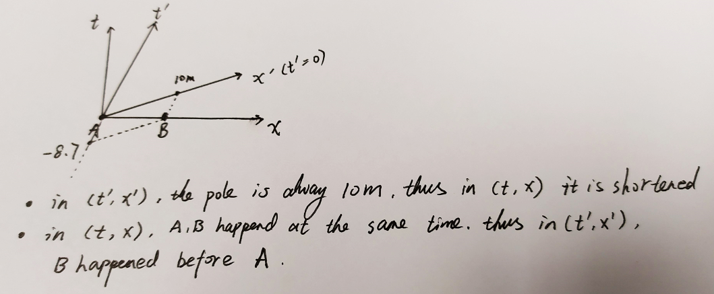

Special Relativity¶
- Date
22 Aug 2019
Dependency¶
What is the problem ?¶
Derivation¶
Code¶
The code is written by myself (Tesla Cat, Ding Ruiqi)
import numpy as np
from numpy.linalg import inv
class SpecialRelativity:
def __init__(self,beta):
self.beta = beta
self.gamma = 1/np.sqrt(1-beta**2)
self.LorentzMatrix = np.array([
[self.gamma, -self.gamma*beta,0,0],
[-self.gamma*beta, self.gamma,0,0],
[0,0,1,0],
[0,0,0,1]
])
self.InverseLorentzMatrix = inv(self.LorentzMatrix)
print("\'self.LorentzMatrix\' is: \n", self.LorentzMatrix )
print("\'self.InverseLorentzMatrix\' is: \n", self.InverseLorentzMatrix )
print("\n")
def LorentzTransform(self,RestFrameCoordinate):
MovingFrameCoordinate = np.matmul( self.LorentzMatrix, RestFrameCoordinate )
print("\'MovingFrameCoordinate\' is:\n",MovingFrameCoordinate ,"\n")
return MovingFrameCoordinate
def InverseLorentzTransform(self,MovingFrameCoordinate):
RestFrameCoordinate = np.matmul( self.InverseLorentzMatrix, MovingFrameCoordinate)
print("\'RestFrameCoordinate\' is:\n",RestFrameCoordinate ,"\n")
return RestFrameCoordinate
Example 1: Vaulter in the barn¶
Problem: Refer to PC4248 2019 Assignment 01 Question 1
My Solution:
beta = np.sqrt(3)/2
SR = SpecialRelativity(beta)
# Part (a) and (b)
RestFrameCoordinate = np.array([0,5,0,0]).reshape([4,1])
SR.LorentzTransform(RestFrameCoordinate)
Result:
'self.LorentzMatrix' is:
[[ 2. -1.73205081 0. 0. ]
[-1.73205081 2. 0. 0. ]
[ 0. 0. 1. 0. ]
[ 0. 0. 0. 1. ]]
'self.InverseLorentzMatrix' is:
[[2. 1.73205081 0. 0. ]
[1.73205081 2. 0. 0. ]
[0. 0. 1. 0. ]
[0. 0. 0. 1. ]]
'MovingFrameCoordinate' is:
[[-8.66025404]
[10. ]
[ 0. ]
[ 0. ]]
Interpretation:
Event \(B\) happened at time \(t'= -8.7\) and position \(x'=10 m\).
This means to the Vaulter(MovingFrame), Event \(B\) happend before \(A\).
When the Vaulter was at rest, he knew that if he want to get into the bar completely, he must cover \(\Delta L=10 m\) since for him the pole is \(10 m\)
Now when the Vaulter moves, in his frame the barn is moving towards him in the \(-x\) direction. For him the pole is still \(10 m\), but the distance \(\Delta L\) he has to cover, is shortened! So he sees Event \(B\) before \(A\).
Illustration:
